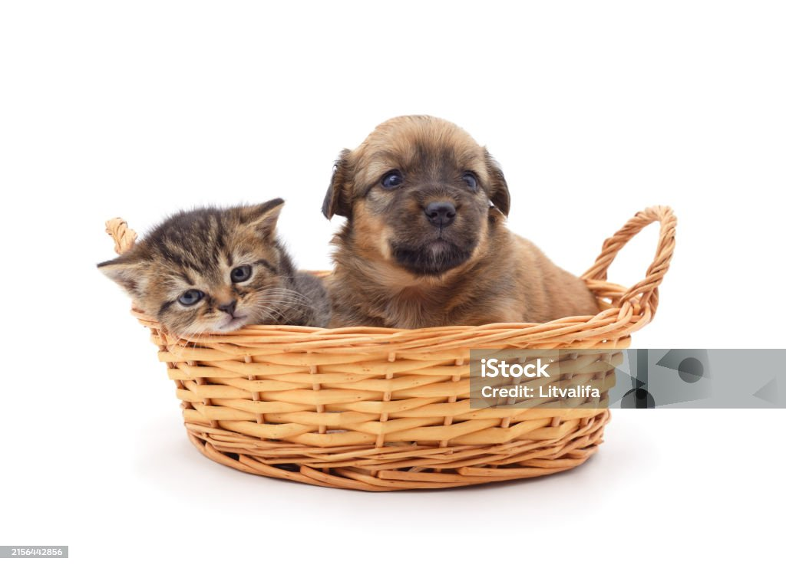
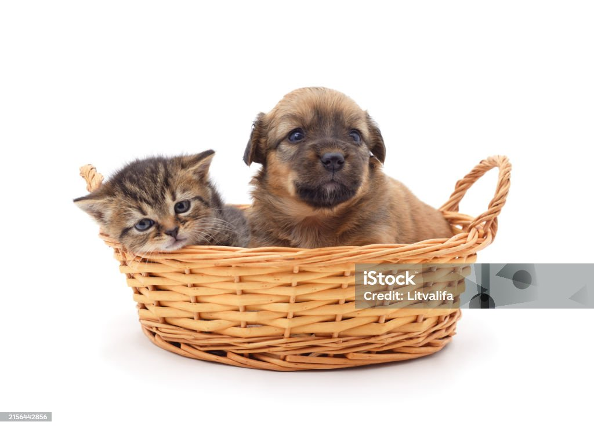
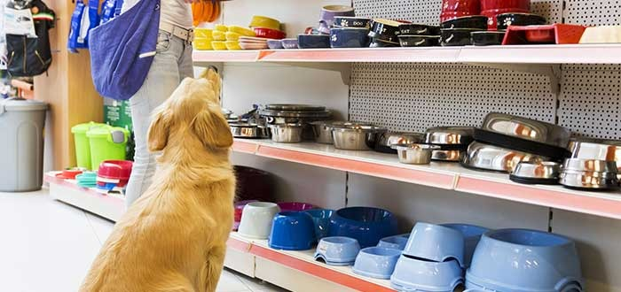
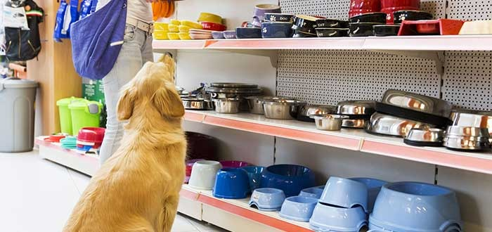

Noticias e Información Relevante
Noticia 1: Los “días de perros” y el cuidado de nuestras mascotas
“Se dice en inglés la frase “dog days of summer”, los días de perros del verano en español, se utiliza para describir estas jornadas calurosas y húmedas.”...
Noticia 2: ¿Cómo deben comportarse los perros en lugares públicos?, esto indican las reglas de etiqueta
“Los lugares ‘Pet friendly’ tienen adaptado el establecimiento para que las mascotas puedan acompañar a sus dueños, sin embargo, no todas las personas gozan de la compañía de los perros y es por eso que se deben de considerar estas cosas si se desea salir con mascotas…”
Noticia 3: ¿Sabías? El abandono animal es una falta establecida en la ley 70
“En Panamá, el abandono animal está regulado por la Ley 70 de 2012, que establece medidas para la protección de los animales domésticos y establece sanciones para quienes incurran en maltrato o abandono de estos animales…..”
 

 

Productos para ti

neabot Neakasa P1 Pro Kit de aseo para mascotas y succión al vacío 99% pelo de mascotas, cortaúñas profesionales con 5 herramientas de aseo probadas para perros, gatos y otros animales
US$129.99

Alicate Cortauñas Small Trixie Conejo Cobayo Gato Huron
US$5.85

Botones de entrenamiento grabables para perros, juego de 7 colores, botones para comunicación, zumbadores de entrenamiento de habla de perros, palabras claras y ya grabadas, volumen ajustable
US$29.99
Alicate Cortauñas Small Trixie Conejo Cobayo Gato Huron
US$5.85
Cesar Top Sirloin F&S 24 3.5Oz Fortificado Con Vitaminas y Minerales Para Ayudar A
US$1.29